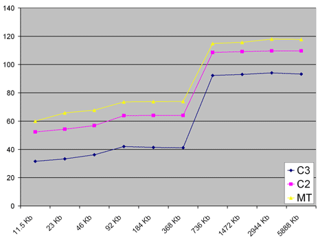
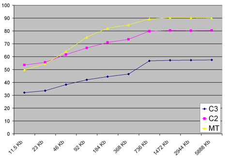
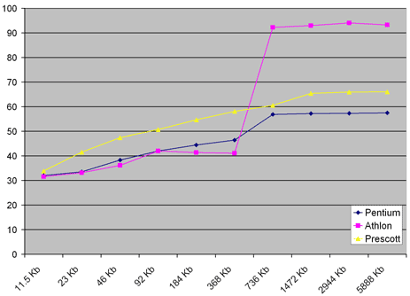
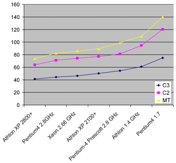
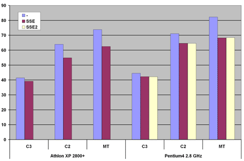

Fast Line-Segment Triangle Intersection
To be sure that C2005 performes well it is desireble to test this
algorithm compare to MT97 on different computers with different hardware
configuration. The algorithms was compiled using MSDEV 7.1 C++ compiler.
All diagrams shows time in ns of one call to procedure.
The first test was done for different size of test data on Athlon
2800 XP+ with DDR400 memory. Athlon has 512Kb of L2 cache memory so when
data size is larger then CPU accesses main memory that takes a lot of time.

Pentium-4 2.8 GHz has 512Kb L2 cache. The main memory is DDR400.

This diagram shows C2005 algorithm for Athlon XP 2800+, DDR400, Pentium-4
2.8 GHz, DDR400 and Pentium 4 (Prescott) 2.8 GHz DDR400 performance.

The next test with 368 Kb of data involves many different configurations. The
diagram shows computation power without accessing main memory.

This test uses C2005 with different probability of intersection

This last test shows SSE and SSE2 performance
